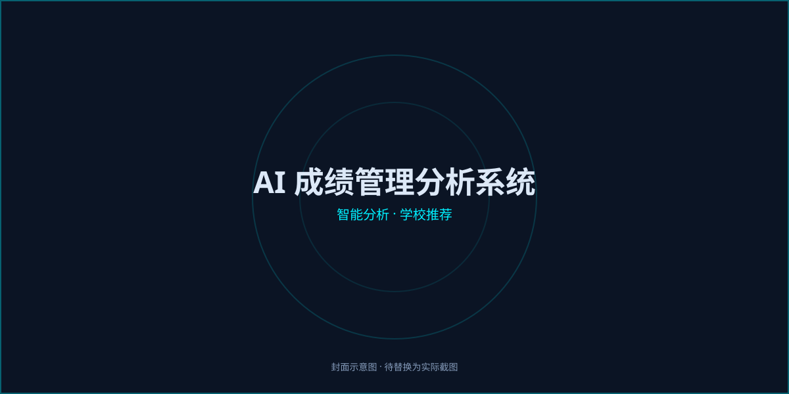
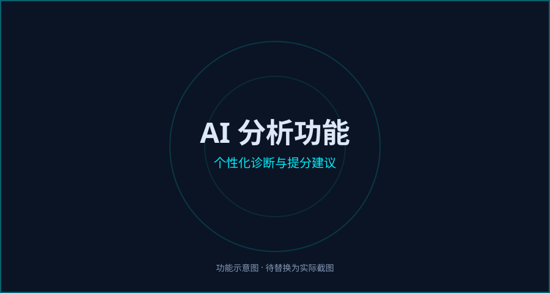
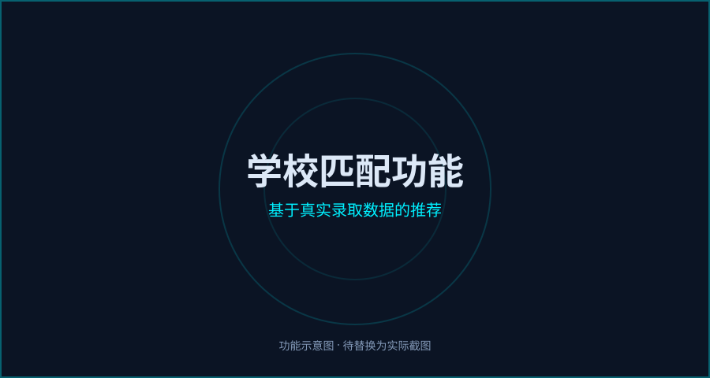

AI成绩管理分析系统
集成绩录入、数据统计、AI智能分析于一体，帮助学生和家长全面掌握学习状况
一、系统简介
AI成绩管理分析系统是一款专为山西长治地区初高中学生打造的成绩管理工具。系统集成绩录入、数据统计、AI智能分析于一体，帮助学生和家长全面掌握学习状况，科学规划升学目标。
成绩管理
轻松录入和管理各科成绩
统计分析
多维度图表展示成绩趋势
AI分析
智能分析成绩并推荐学校
二、注册与登录
注册账号
打开网站首页，点击"立即注册"按钮，填写用户名、密码和昵称，点击"注册"即可完成。
登录系统
在登录页面输入用户名和密码，点击"登录"进入系统主界面。
修改个人资料
点击右上角用户名，选择"个人资料"，可修改昵称、邮箱、电话和登录密码。
三、成绩录入
选择年级
点击顶部菜单"新建成绩"，选择学生所在年级（初一到高三）。
选择考试类型
系统预设了"期中考试"和"期末考试"，您也可以在"设置"中自定义添加其他类型。
填写考试日期
选择考试日期（可选），不填写不影响成绩录入和统计。
输入各科成绩
系统会根据所选年级自动显示对应科目。只需填写实际参加考试的科目成绩，未参加的科目留空即可。
保存成绩单
确认无误后点击"保存成绩单"，系统会自动计算总分和得分率。
四、成绩查看与管理
成绩单列表
在"成绩单"页面查看所有录入的成绩记录，显示总分、得分率、考试信息等。支持按年级和考试类型筛选。
成绩详情
点击"查看"按钮进入详情页，可查看各科分数、得分率、总分和满分对比。
编辑成绩
点击"编辑"按钮可修改已录入的成绩信息，修改后保存即可更新。
删除成绩
点击"删除"按钮可移除不需要的成绩记录，删除后无法恢复。
五、统计分析
点击顶部菜单"统计分析"，系统提供丰富的数据图表帮助您全面了解学习状况。
学段/年级筛选
支持按以下维度筛选数据：
初中全部 / 初一 / 初二 / 初三
高中全部 / 高一 / 高二 / 高三
统计图表
📊 概览统计
考试次数、平均得分率、最高分、最低分等关键指标一目了然。
🥧 年级分布
饼图展示各年级考试次数分布，了解考试覆盖情况。
📈 总分趋势
折线图展示历次考试得分率变化趋势，直观反映进步或退步。
📉 单科趋势
选择具体科目，查看该科目历次考试的得分率变化。
六、AI智能分析
系统核心功能，利用AI技术深度分析成绩，提供个性化建议和学校推荐。

6.1 进行AI分析
选择成绩单
在"AI全面分析"页面，先切换"初中"或"高中"标签，然后勾选要分析的成绩单（可多选）。
选择分析类型
系统提供三种分析类型，点击卡片选择：
📈 成绩分析
分析各科优劣势、成绩波动趋势，给出具体提分建议。
🏫 学校匹配
根据成绩预测可报考的学校，推荐冲刺/稳妥/保底方案。
📚 学习规划
制定针对性学习计划，推荐学习方法和重点突破方向。
开始分析
点击"开始AI全面分析"按钮，等待10-30秒，AI将生成详细的分析报告。
6.2 与AI对话
分析完成后，在报告详情页底部有"继续提问"区域，您可以：
- 针对分析结果追问细节，如"数学怎么提高？"
- 了解升学建议，如"我还有希望考上太行中学吗？"
- 获取学习规划，如"给我制定一个寒假复习计划"
- 所有对话历史自动保存，下次查看报告时可继续
6.3 历史报告
点击"历史报告"标签，可查看所有已保存的AI分析报告。支持按学段（初中/高中）和分析类型（成绩分析/学校匹配/学习规划）筛选。每条记录显示分析时间、分数、考试信息等。
七、学校匹配功能
系统根据学生学段自动匹配不同的学校数据库，AI会基于真实录取数据给出推荐。

初中 → 高中推荐
基于山西长治地区2025年中考统招录取分数线：
| 排名 | 学校 | 2025统招线 | 层次 |
|---|---|---|---|
| 1 | 太行中学 | 789分 | 冲刺 |
| 2 | 长治二中 | 773分 | 冲刺 |
| 3 | 长治一中 | 752分 | 稳妥 |
| 4 | 长治六中 | 728分 | 稳妥 |
| 5 | 长治五中 | 701分 | 保底 |
高中 → 大学推荐
基于2025年全国高校在山西录取分数线（部分展示）：
| 排名 | 高校 | 类型 | 参考分 |
|---|---|---|---|
| 1 | 清华大学 | 985/C9 | 680+ |
| 2 | 北京大学 | 985/C9 | 678+ |
| 3 | 复旦大学 | 985/C9 | 665+ |
| 29 | 太原理工大学 | 211 | 517+ |
| 30 | 山西大学 | 省内重点 | 505+ |
| 37 | 长治医学院 | 省内本科 | 430+ |
| 38 | 长治学院 | 省内本科 | 419+ |
八、个人设置
考试类型管理
在"设置"页面可添加或删除考试类型。系统预设了"期中考试"和"期末考试"，您可以根据需要添加如"月考"、"周测"等。
科目管理
初中科目和高中科目分开管理。系统预设了语文、数学、英语三科，您可以添加物理、化学、生物、政治、历史、地理等更多科目，并设置满分值。
九、常见问题
立即开始使用
注册账号，录入成绩，让AI帮您分析学习状况、规划升学目标